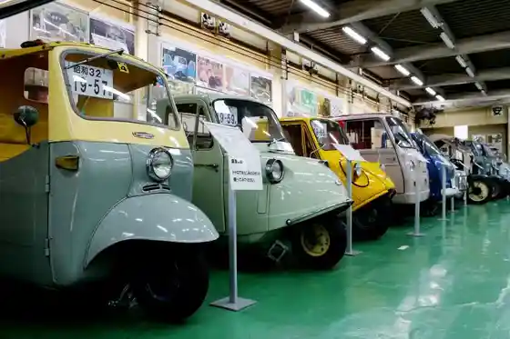
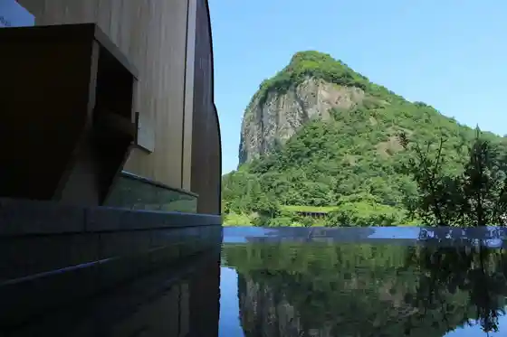

Tsubame Sanjo Kojo no Saiten 2026
Sanjo, Niigata · 080-1186-0484 · Official / source link
Roadside Station (Tsubame Sanjo Jiba San Center)
Sanjo, Niigata · 0256-32-2311 · Official / source link
KYOWA Kurashikkuka & Raifusuteshon
Sanjo, Niigata · 0256-34-4440 · Official / source link

Yagigahana Onsen Ii Yu Ratei
Sanjo, Niigata · 0256-41-3011 · Official / source link

Nakaura Himesayuri Forest Park
Sanjo, Niigata · 0256-46-4997 · Official / source link
Yagigahana
Sanjo, Niigata · 0256-34-5511 · Official / source link
Hokke Shu Sohonzan Hon Sei Tera
Sanjo, Niigata · 0256-32-0008 · Official / source link
Echigo Nagano Onsen Rankei So
Sanjo, Niigata · 0256-47-2211 · Official / source link
Sanjo Hachiman Shrine
Sanjo, Niigata · 0256-33-1278 · Official / source link
Sanjo Kaji Dojo
Sanjo, Niigata · 0256-34-8080 · Official / source link
Roadside Station (Kangaku no Sato Shitada)
Sanjo, Niigata · 0256-47-2230 · Official / source link
CAPTAINSTAG® Yagigahana Oto Campground
Sanjo, Niigata · 090-7199-9547 · Official / source link
Roadside Station (Garden no Sato Honai)
Sanjo, Niigata · 0256-38-7276 · Official / source link
Tsubame Sanjo Jibasan Samafea 2026
Sanjo, Niigata · 0256-32-2311 · Official / source link
Kita Imokawa no Tanada
Sanjo, Niigata · 0256-34-5511 · Official / source link
Shirasagi Forest Park
Sanjo, Niigata · 0256-34-5717 · Official / source link
Jinmei Miya
Sanjo, Niigata · 0256-33-1424 · Official / source link
Suwa Ta Seisakusho
Sanjo, Niigata · 0256-45-6111 · Official / source link
Su no Piikuheddokuotazukyanpufiirudo
Sanjo, Niigata · 0256-41-2222 · Official / source link
Isurugi Shrine
Sanjo, Niigata · 0256-34-5605 · Official / source link
Hakucho no Sato Park
Sanjo, Niigata · 0256-34-5511 · Official / source link
Tsubame Sanjo Wing
Sanjo, Niigata · 0256-34-7310 · Official / source link
Sanjo Rekishi Minzoku Sangyo Museum
Sanjo, Niigata · 0256-33-4446 · Official / source link
Ame Namagaike (Maoigaike)
Sanjo, Niigata · 0256-34-5511 · Official / source link
Snow Peak FIELD SUITE SPA HEADQUARTERS
Sanjo, Niigata · 0256-46-5650 · Official / source link
Honda CBX400F Kurashikkubaikurentaru 6 Jikan Kosu (Haru Aki)
Sanjo, Niigata · 0256-34-4440 · Official / source link
Shitada Onsen Sato
Sanjo, Niigata · Official / source link
Awagagaku
Sanjo, Niigata · 0256-34-5511 · Official / source link
Yagigahana Onsen Ii Yu Ratei
Sanjo, Niigata · 0256-41-3011 · Official / source link
Guriinsupotsu Center
Sanjo, Niigata · 0256-38-3968 · Official / source link
Koshoji
Sanjo, Niigata · 0256-45-2508 · Official / source link
Honda S800 Kurashikkukarentaru 6 Jikan Kosu (Haru Aki)
Sanjo, Niigata · 0256-34-4440 · Official / source link
Guriinsupotsu Center Osaki Yama Park
Sanjo, Niigata · 0256-38-3968 · Official / source link
Fuku Kao Shuzo (Kabu) / (Igarashi Kawa)
Sanjo, Niigata · 0256-33-0123 · Official / source link
Nozaki Seisakusho
Sanjo, Niigata · 0256-32-3667 · Official / source link
Sanjo Kareramen
Sanjo, Niigata · 0256-36-5111 · Official / source link
Otani Dam
Sanjo, Niigata · 0256-34-5511 · Official / source link
Honai Park
Sanjo, Niigata · 0256-38-5240 · Official / source link
Hikyo Hachiju Sato Etsu Taikan Basu Tour
Sanjo, Niigata · 0256-34-5511 · Official / source link
Kichigataira Shizentai Kan no Sato
Sanjo, Niigata · 090-3226-5912 · Official / source link
Watanabe Orchard
Sanjo, Niigata · 0256-34-5470 · Official / source link
Shirasagi So
Sanjo, Niigata · 0256-45-0888 · Official / source link
Awagagaku Kita Imokawa Tozanguchi
Sanjo, Niigata · 0256-34-5511 · Official / source link
Oyako De Tanoshiku Omocha Tsukuri ! Kikkusu Ga Ta (1 Dai)
Sanjo, Niigata · 0256-32-3667 · Official / source link
Kasa Hori Dam
Sanjo, Niigata · 0256-34-5511 · Official / source link
Sumon Gaku
Sanjo, Niigata · 0256-34-5511 · Official / source link
Puro Ni Manabi, Honmono no Kikai Ni Fureru ! Kojokengaku & Mini Daisha Zukuri
Sanjo, Niigata · 0256-32-3667 · Official / source link
BLASTMAN
Sanjo, Niigata · 0256-46-8516 · Official / source link
Kyo Kara Shokutaku Ni Mai Hashi ! Shokunin no Town De Hakkaku Hashi Tsukuri Experience (2 Zen)
Sanjo, Niigata · 0256-45-7001 · Official / source link